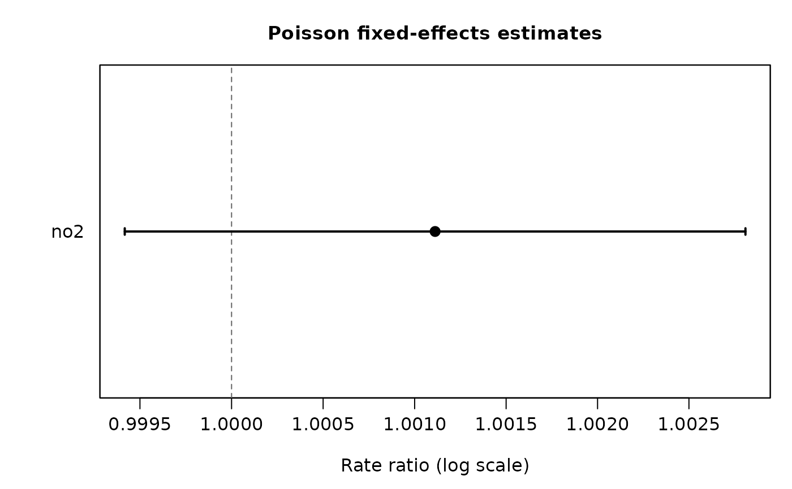

Compares each day's count with the counts of the same place on the
other days of its stratum, the case-crossover design for counts: a
Poisson model with one fixed effect per stratum, which gives the same
coefficients as the conditional Poisson model. Ju et al. (2026,
equations 1 and 2, p. 7) use the space-time stratum "one region nested
in the same weekday of same month from the same year" (strat = "ymw", the default), a control function for wildfire PM2.5 driven by
wind speed, the 2-day moving average of exposure (ma), and errors
clustered by calendar year-month (the default clus here).
Usage
ccross(
data,
y,
unit,
day,
strat = c("ymw", "ym"),
ma = NULL,
k = 2,
lagv = NULL,
lag = 0,
ns = NULL,
est = ppmlfe,
...
)Arguments
- data
A data frame, one row per place and day.
- y
The name of the count column.
- unit
The name of the place column.
- day
The name of the day column: dates, ISO date text such as
"2024-06-01", or numbers of days since 1970-01-01 (as the command line gives dates).- strat
"ymw"or"ym".- ma
NULLor the names of columns to average over days.- k
The days of the moving average.
- lagv
NULLor the names of columns to replace by their valuelagdays before (single-day lags).- lag
The lag in days for
lagv.- ns
NULLor degrees of freedom named by column, for examplec(temp = 6, rh = 3): natural cubic splines of those columns join the controlsx(named"<col>:ns<j>").- est
- ...
The other arguments of
est(x, orendoandinst;clusto change the clustering).
Value
The fit of est, with the stratum column .strat and the
year-month column .ym added to the data it used.
Details
Armstrong, Gasparrini and Tobias (2014, p. 3-4 and table 4) show that
the Poisson model with stratum indicators gives the same estimates as
the conditional Poisson and the conditional logistic case-crossover
model, and that the Poisson forms, unlike the conditional logistic one,
allow for overdispersion (quasi-Poisson, the dispersion estimated from
Pearson's chi-squared: se = "quasi" of ppmlfe(), passed through
...), for autocorrelation and for varying denominators (an offset:
expo). The clustered errors used by default here also allow for
overdispersion and for correlation within a year-month. Their
adjustment for autocorrelation (Brumback's method, in their additional
file) is not built: the paper does not state it.
Han et al. (2026, Methods, p. 2) run the design on 483,718 crime events
in China, 2013-19: control days the same weekday of the same calendar
month (strat = "ymw"), conditional logistic regression (equivalent to
the Poisson with stratum effects on daily counts by place, as above),
an indicator of public holidays, natural cubic splines of temperature
(6 degrees of freedom) and relative humidity (3) (ns), single-day lags
0 to 6 (lagv, lag; their main table is lag 0), exposure-response
curves by a natural spline of the pollutant with 3 degrees of freedom
(give the pollutant in ns and plot its fitted terms), effect
modification by stratified fits compared by two-sample z-tests (fit
each subset, or hetfx() with how = "split"), and two-pollutant
models (two exposures in x), reporting percent changes per
interquartile range, 100 (exp(b IQR) - 1). Their weighted quantile sum
regression and air quality score are not built.
The choices: strat = "ymw" (place, year, month and weekday) or "ym"
(place, year and month, the plain time-stratified design); ma, the
columns to replace by their mean over the day and the k - 1 days
before (2 in Ju et al. and in Heo et al. 2026, "lag01"; a day whose
earlier days are missing is dropped); est, ppmlfe() for an
exposure taken as exogenous or ppmlcf() for the instrumented design of
Ju et al. (give endo and inst).
Deaths or offences one by one. Rahman et al. (2023, sec. 2) fit the
individual case-crossover design by conditional logistic regression: for
each death the day it happened against "the first, second, and fourth
Tuesdays" of the month when it fell on the third, the exposure that of
the decedent's census tract on each day, each lag from 0 to 7 in its own
model, relative humidity as a natural spline of 3 degrees of freedom.
When every decedent of a tract shares the tract's exposure, the
conditional logistic likelihood of the individuals is the conditional
Poisson likelihood of the tract's daily counts: the individuals of one
tract, month and weekday share their referent days and exposures, so
that design is this one with unit the tract, strat = "ymw", lagv
and lag for the lag and ns = c(rh = 3), its coefficients the log
odds ratios.
References
Ju, K., Xu, R., Huang, W., Zhang, Y., Ye, T., Yu, W., Yang, Z., Chen, G., Liu, Y., Yu, P., Zhou, S., Wu, Y., Wen, B., Xu, Z., Saldiva, P. H. N., Coelho, M. S. Z. S., Song, J., Li, S. and Guo, Y. (2026). Causal effects of wildfire PM2.5 on hospital costs and length of stay in Brazil. Nature Communications, 17, 8375. doi:10.1038/s41467-026-75157-8
Heo, S., Berman, J. D. and Bell, M. L. (2026). Multi-city study of the joint effects of ozone and temperature exposure on violent crime during warm months in the United States. Environmental Research, 310, 125969. doi:10.1016/j.envres.2026.125969
Armstrong, B. G., Gasparrini, A. and Tobias, A. (2014). Conditional Poisson models: a flexible alternative to conditional logistic case cross-over analysis. BMC Medical Research Methodology, 14, 122.
Burkhardt, J., Bayham, J., Wilson, A., Carter, E., Berman, J. D., O'Dell, K., Ford, B., Fischer, E. V. and Pierce, J. R. (2019). The effect of pollution on crime: evidence from data on particulate matter and ozone. Journal of Environmental Economics and Management, 98, 102267. doi:10.1016/j.jeem.2019.102267
Han, D., Guo, Y., Jiang, Y., Niu, Y., Chen, R., Kan, H. and others (2026). Air pollution and criminal behavior: a nationwide case-crossover analysis in China. International Journal of Epidemiology, 55(5), dyag214. doi:10.1093/ije/dyag214
Rahman, M. M., Lorenzo, M., Ban-Weiss, G., Hasan, Z., Azzouz, M., Eckel, S. P., Conti, D. V., Lurmann, F., Schlaerth, H., Johnston, J., Ko, J., Palinkas, L., Hurlburt, M., Silva, S., Gauderman, W. J., McConnell, R. and Garcia, E. (2023). Ambient temperature and air pollution associations with suicide and homicide mortality in California: a statewide case-crossover study. Science of the Total Environment, 874, 162462. doi:10.1016/j.scitotenv.2023.162462
Examples
set.seed(9)
d <- expand.grid(day = as.Date("2023-01-01") + 0:364, area = 1:4)
d$pm <- rnorm(nrow(d), 15, 4)
d$crimes <- rpois(nrow(d), exp(1 + 0.02 * d$pm))
ccross(d, "crimes", "area", "day", ma = "pm", x = "pm")
#> ppmlfe: Poisson pseudo-likelihood, 1456 rows, fixed effects .strat; clustered errors (.ym; 12)
#> term est se stat p lo hi rr
#> pm 0.01792 0.005167 3.467 0.0005256 0.007789 0.02804 1.018
# shaped as Burkhardt et al. (2019, JEEM, equation 1, p. 5): county-day
# counts on PM2.5 and ozone together, county-by-year-by-month-by-weekday
# effects, errors clustered by county (simulated)
d$o3 <- rnorm(nrow(d), 0.03, 0.01)
ccross(d, "crimes", "area", "day", x = c("pm", "o3"), clus = "area")
#> Warning: ccross: fewer than ten clusters; cluster-robust errors are unreliable with so few (wcbx() is made for this case).
#> ppmlfe: Poisson pseudo-likelihood, 1460 rows, fixed effects .strat; clustered errors (area; 4)
#> term est se stat p lo hi rr
#> pm 0.01407 0.002616 5.37971 7.461e-08 0.008946 0.0192 1.014
#> o3 0.11728 1.936045 0.06058 9.517e-01 -3.677299 3.9119 1.124
# shaped as Han et al. (2026, Methods p. 2 and table 1): city-day
# counts, same-weekday-same-month strata, a holiday indicator, natural
# splines of temperature (6 df) and humidity (3 df), NO2 at lag 0, the
# percent change per interquartile range (simulated)
d$no2 <- rnorm(nrow(d), 30, 10)
d$temp <- 15 + 10 * sin(2 * pi * as.numeric(d$day) / 365) +
rnorm(nrow(d))
d$rh <- runif(nrow(d), 30, 90)
d$hol <- as.numeric(format(d$day, "%m-%d") %in% c("01-01", "10-01"))
d$crimes <- rpois(nrow(d), exp(1 + 0.004 * d$no2))
h <- ccross(d, "crimes", "area", "day", x = c("no2", "hol"),
ns = c(temp = 6, rh = 3), clus = "area")
#> Warning: ccross: fewer than ten clusters; cluster-robust errors are unreliable with so few (wcbx() is made for this case).
b <- h$coef[h$coef$term == "no2", ]
100 * (exp(c(b$est, b$lo, b$hi) * IQR(d$no2)) - 1)
#> [1] 1.4930239 -0.7746229 3.8124944
plot(h, terms = "no2")
